Capítulo 8 Matrices
En el Capítulo 2, usamos algunos arreglos unidimensionales simples. En este capítulo, exploraremos las matrices en profundidad y exploraremos algunos temas de matrices más avanzados, como matrices multidimensionales, matrices y punteros, e inicialización de matrices.
8.1 Matriz unidimensional
Antes de discutir las matrices multidimensionales, todavía necesitamos aprender mucho sobre las matrices unidimensionales. Primero, aprendamos un concepto, que muchos consideran un defecto en el diseño del lenguaje C. Sin embargo, este concepto enlaza algunos conceptos completamente diferentes juntos de una manera bastante elegante.
8.1.1 Nombre de la matriz
Considere estas declaraciones:
int a;
int b[10];Llamamos a la variable a un escalar porque es un valor único y el tipo de esta variable es un número entero. Llamamos a la variable b una matriz porque es una colección de valores. El subíndice y el nombre de la matriz se utilizan juntos para identificar un valor específico en la colección. Por ejemplo, b [0] representa el primer valor de la matriz by b [4] representa el quinto valor. Cada valor específico es un escalar y se puede utilizar en cualquier contexto en el que se puedan utilizar datos escalares.
El tipo de b [4] es un número entero, pero ¿cuál es el tipo de b? ¿Qué significa? Una respuesta lógica es que representa la matriz completa, pero este no es el caso. En C, en casi todas las expresiones que usan nombres de matriz, el valor del nombre de matriz es una constante de puntero, que es la dirección del primer elemento de la matriz. Su tipo depende del tipo de los elementos de la matriz: si son de tipo int, entonces el tipo del nombre de la matriz es "puntero constante a int"; si son de otros tipos , entonces el tipo de nombre de la matriz es " puntero constante a otros tipos ".
No concluya que las matrices y los punteros son iguales basándose en este hecho. Las matrices tienen algunas características que son completamente diferentes de los punteros. Por ejemplo, una matriz tiene un cierto número de elementos y un puntero es solo un valor escalar. El compilador usa el nombre de la matriz para recordar estos atributos. Solo cuando se usa el nombre de la matriz en la expresión, el compilador generará una constante de puntero para ella.
Tenga en cuenta que este valor es una constante de puntero, no una variable de puntero. No puede modificar el valor de una constante. Si lo piensa un poco, pensará que esta restricción es razonable: la constante del puntero apunta a la posición inicial de la matriz en la memoria. Si modifica esta constante de puntero, la única operación factible es mover toda la matriz a otra ubicación en la memoria. Sin embargo, una vez que el programa está vinculado, la posición de la matriz en la memoria se fija, por lo que cuando el programa se está ejecutando, es demasiado tarde para mover la matriz. Por lo tanto, el valor del nombre de la matriz es una constante de puntero.
Sólo en dos casos, el nombre de la matriz no está representado por una constante de puntero, es decir, cuando el nombre de la matriz se usa como operando del operador sizeof o el operador unario &. sizeof devuelve la longitud de toda la matriz, no la longitud del puntero a la matriz. Tomar la dirección de un nombre de matriz produce un puntero a una matriz (los punteros a una matriz se analizan en la Sección 8.2.2 y la Sección 8.2.3), no un puntero a un valor constante de puntero.
Ahora considere el siguiente ejemplo:
La expresión & a [0] es un puntero al primer elemento de la matriz. Pero ese es el valor del nombre de la matriz en sí, por lo que las tareas realizadas por la siguiente declaración de asignación y la declaración de asignación anterior son exactamente las mismas:
c = a;Esta declaración de asignación explica por qué es importante comprender el verdadero significado del nombre de la matriz en la expresión. Si el nombre de la matriz representa la matriz completa, esta declaración significa que la matriz completa se copia en una nueva matriz. Pero, de hecho, este no es el caso en absoluto, lo que realmente se asigna es una copia de un puntero y c apunta al primer elemento de la matriz. Por tanto, una expresión como la siguiente:
b = a;Es ilegal. No puede usar el operador de asignación para copiar todos los elementos de una matriz a otra matriz. Tienes que usar un bucle, copiando un elemento a la vez.
Considere la siguiente declaración:
a = c;c se declara como una variable de puntero Esta declaración parece que realiza alguna forma de asignación de puntero, copiando el valor de c en a. Pero esta asignación es ilegal: ¡recuerda! En esta expresión, el valor de a es una constante y no se puede modificar.
8.1.2 Referencia de subíndice
En el contexto de la declaración anterior, ¿qué significa la siguiente expresión?
*( b + 3 )Primero, el valor de b es un puntero a un número entero, por lo que el valor de 3 se ajusta de acuerdo con la longitud del valor entero. El resultado de la operación de suma es otro puntero a un número entero, que apunta a la posición donde el primer elemento de la matriz se mueve hacia atrás en 3 números enteros. Luego, la operación de acceso indirecto visita esta nueva ubicación u obtiene el valor allí (valor de la derecha) o almacena un nuevo valor allí (valor de la izquierda).
¿Te suena familiar este proceso? Esto se debe a que es exactamente igual que el proceso de ejecución de la referencia del subíndice. Ahora podemos explicar la oración mencionada en el Capítulo 5: Excepto por la prioridad, las referencias de subíndice y los accesos indirectos son exactamente iguales. Por ejemplo, estas dos expresiones son equivalentes:
array[subscript]
*( array + ( subscript ) )Ahora que sabe que el valor del nombre de la matriz es solo una constante de puntero, puede probar su igualdad. En esa expresión de subíndice, el subíndice del subíndice se evalúa primero. Luego, este valor de subíndice selecciona un elemento específico en la matriz. En la segunda expresión, el paréntesis interior asegura que el subíndice del subíndice se evalúe primero como la expresión anterior. Después de la aritmética de punteros, el resultado de la suma es un puntero al elemento requerido. Luego, realice una operación de acceso indirecto en este puntero para acceder al elemento de matriz al que apunta.
Cuando se utilizan referencias de subíndice, puede utilizar expresiones de puntero equivalentes en su lugar. Cuando se utilizan expresiones de puntero de la forma anterior, también puede utilizar expresiones de subíndice.
Aquí hay un pequeño ejemplo para ilustrar esta igualdad.
int array[10];
int *ap = array + 2;Recuerde que 2 se ajustará durante la suma del puntero. El puntero ap generado por el resultado de la operación apunta a la matriz [2], como se muestra a continuación:
En las siguientes expresiones que involucran ap, vea si puede escribir una expresión equivalente usando matriz.
Ap es muy fácil, solo necesita leer su expresión de inicialización para obtener la respuesta: matriz + 2. Además, & array [2] también es una expresión equivalente.
* ap Esto también es muy fácil, el acceso indirecto sigue al puntero para acceder a la ubicación apuntada por él, que es array [2]. También puede escribir: * (matriz + 2).
ap [0] "¡No puedes hacer esto, ap no es una matriz!" Si piensas de esta manera, estás atrapado en el pensamiento habitual de que "otros lenguajes no pueden hacer esto". Recuerde, las referencias del subíndice C y las expresiones de acceso indirecto son iguales. En este caso, la expresión equivalente es * (ap + (0)), excepto por 0 y paréntesis, el resultado es igual a la expresión anterior. Por lo tanto, su respuesta es la misma que la pregunta anterior: matriz [2].
ap + 6 Si ap apunta a la matriz [2], el elemento apuntado por el puntero generado por esta adición es el elemento de la matriz [2] movido hacia atrás en 6 posiciones enteras. Su expresión equivalente es array + 8 o & array [8].
* ap + 6 ¡Cuidado! Hay dos operadores, ¿cuál se ejecuta primero? Es una visita indirecta. El resultado del acceso indirecto se suma a 6, por lo que esta expresión es equivalente a la expresión matriz [2] +6.
* (ap + 6) Los paréntesis obligan a que la operación de suma se realice primero, por lo que el valor que obtenemos esta vez es array [8]. Tenga en cuenta que la operación de acceso indirecto aquí es exactamente la misma que la operación de referencia de subíndice.
ap [6] convierte esta expresión de subíndice a su forma de expresión de acceso indirecto correspondiente, encontrará que es la expresión que acabamos de completar, por lo que sus respuestas son las mismas.
La expresión & ap es completamente legal, pero no hay una expresión equivalente que involucre una matriz en este momento, porque no se puede predecir dónde colocará el compilador ap en relación con la matriz.
ap [-1] ¿Por qué es de nuevo? ¡Subíndices negativos! La referencia de subíndice es una expresión de acceso indirecto, solo necesita convertirla a esa forma y evaluarla. ap apunta al tercer elemento (es decir, el elemento cuyo valor de subíndice es 2), por lo que usar offset -1 nos permite obtener su elemento anterior, que es array [1].
La expresión ap [9] parece normal, pero de hecho hay problemas. Su expresión equivalente es matriz [11], pero el problema es que esta matriz tiene solo 10 elementos. El resultado de esta expresión de subíndice es una expresión de puntero, pero la posición a la que apunta cruza el límite derecho de la matriz. Según el estándar, esta expresión es ilegal. Sin embargo, pocos compiladores pueden detectar tales errores, por lo que el programa puede continuar ejecutándose sin problemas. Pero, ¿qué hace exactamente esta expresión? El estándar dice que su comportamiento no está definido, pero en la mayoría de las máquinas, accederá al valor que está almacenado en la segunda posición después del último elemento de la matriz. A veces puede inferir cuál es este valor pidiendo al compilador que genere una versión en lenguaje ensamblador del programa y la inspeccione, pero no tiene una forma uniforme de predecir qué valor se almacena en este lugar. Por lo tanto, esta expresión accederá (o, si se usa como un lvalue, modificará) el valor de una variable arbitraria. Este resultado probablemente no sea el esperado.
Los dos últimos ejemplos muestran por qué la verificación de subíndices es una tarea difícil en C. La norma no establece este requisito. Los primeros compiladores de C no comprobaron los subíndices y los últimos compiladores aún no lo comprobaron. Esta tarea es difícil porque las referencias de subíndice se pueden aplicar a cualquier puntero, no solo a los nombres de matriz. La validez de una referencia de subíndice que actúa sobre un puntero depende no solo de a qué apunta exactamente el puntero en ese momento, sino también del valor del subíndice.
Como resultado, la sobrecarga involucrada en la verificación del subíndice de C es más de lo que imaginaba inicialmente. El compilador debe insertar instrucciones en el programa para verificar que el elemento al que hace referencia el resultado de la expresión del subíndice y el elemento al que apunta la expresión del puntero pertenecen a la misma matriz. Esta operación de comparación requiere información sobre la posición y la longitud de todas las matrices en el programa, lo que ocupará algo de espacio. Cuando el programa se está ejecutando, esta información debe actualizarse para reflejar la matriz asignada automática y dinámicamente, lo que a su vez llevará una cierta cantidad de tiempo. Por lo tanto, incluso aquellos compiladores que proporcionan verificación de subíndices generalmente proporcionarán un modificador que le permite eliminar la verificación de subíndices.
Aquí hay un ejemplo interesante, pero también misterioso y digresivo. Suponiendo que la siguiente expresión está en el mismo contexto que la anterior, ¿qué significa?
2[array]Su respuesta puede sorprenderte: es legal. Conviértalo en una expresión de acceso indirecto equivalente y encontrará su validez:
*( 2 + ( array ) )El soporte interior es redundante, podemos quitarlo. Al mismo tiempo, los dos operandos de la operación de suma pueden intercambiar posiciones, por lo que esta expresión es exactamente la misma que la siguiente expresión
*( array + 2 )En otras palabras, la expresión impar al principio es igual a array [2].
Esta extraña técnica es factible debido a la forma en que C implementa subíndices. Para el compilador, no hay diferencia entre estas dos formas. Sin embargo, nunca debe escribir 2 [matriz], ya que afectará en gran medida la legibilidad del programa.
8.1.3 Punteros y subíndices
Si puede usar expresiones de puntero y expresiones de subíndice de manera intercambiable, ¿cuál debería usar? Como siempre, aquí no hay una respuesta concisa. Para la mayoría de las personas, los subíndices son más fáciles de entender, especialmente en matrices multidimensionales. Por lo tanto, en términos de legibilidad, los subíndices tienen ciertas ventajas. Pero, por otro lado, esta elección puede afectar la eficiencia del tiempo de ejecución.
Suponiendo que ambos métodos son correctos, los subíndices nunca son más eficientes que los apuntadores, pero los apuntadores a veces pueden ser más eficientes que los subíndices.
Para comprender este problema de eficiencia, estudiemos dos bucles, que se utilizan para realizar la misma tarea. Primero, usamos el esquema de subíndice para establecer todos los elementos de la matriz en 0.
int array[10], a;
for ( a = 0; a < 10; a +=1 )
array[a] = 0;Para evaluar la expresión de subíndice, el compilador inserta instrucciones en el programa para obtener el valor de ay multiplicarlo por la longitud del número entero (es decir, 4). Esta multiplicación requiere una cierta cantidad de tiempo y espacio.
Ahora echemos un vistazo al siguiente ciclo, que realiza exactamente las mismas tareas que el ciclo anterior.
int array[10], *ap;
for( ap = array; ap < array + 10; ap++ )
*ap = 0;Aunque no hay subíndice, todavía hay una operación de multiplicación. Eche un vistazo más de cerca y vea si puede encontrarlo.
Ahora, esta operación de multiplicación aparece en la parte de ajuste de la instrucción for. 1 Este valor debe multiplicarse por la longitud del número entero y luego sumarse al puntero. Pero hay una gran diferencia: cada vez que se ejecuta el ciclo, la multiplicación se realiza por dos números idénticos (1 y 4). Como resultado, esta multiplicación solo se realiza una vez en el momento de la compilación; el programa ahora contiene una instrucción para sumar 4 al puntero. El programa no realiza multiplicaciones en tiempo de ejecución.
Este ejemplo ilustra la situación en la que los punteros son más eficientes que los subíndices: cuando se mueve un paso a la vez (o un número fijo) en la matriz, la operación de multiplicar con el número fijo se completa en tiempo de compilación, por lo que en Less las instrucciones son requerido en tiempo de ejecución. En la mayoría de las máquinas, el programa será más pequeño y más rápido.
Ahora considere los siguientes dos fragmentos de código:
a = get_value(); a = get_value();
array[a] = 0; *( array + a ) = 0;No hay diferencia en el código generado por las declaraciones en ambos lados. a puede tener cualquier valor y se conoce en tiempo de ejecución. Por tanto, ambos esquemas requieren instrucciones de multiplicación para ajustar el valor de a. Este ejemplo ilustra una situación en la que la eficiencia de los punteros y subíndices es exactamente la misma.
8.1.4 La eficiencia de los punteros
Dije anteriormente que los punteros a veces son más eficientes que los subíndices, siempre que se usen correctamente . Como se dice en la televisión, sus resultados pueden ser diferentes, dependiendo de su compilador y máquina. Sin embargo, la eficiencia del programa depende principalmente del código que escriba. Al igual que con los subíndices, es fácil escribir código de mala calidad con punteros. De hecho, esta posibilidad puede ser mayor.
Para ilustrar algunas técnicas fallidas y algunas buenas, veamos una función simple que usa subíndices para copiar el contenido de una matriz a otra. Analizaremos el código ensamblador generado por esta función, hemos elegido un compilador específico que se ejecuta en una computadora con la familia de procesadores Motorola M68000. Luego, modificaremos esta función de diferentes formas de usar punteros para ver qué efecto tiene cada modificación en el código de destino resultante.
Antes de comenzar con este ejemplo, hay dos cosas a tener en cuenta. En primer lugar, la forma en que escribe el programa no solo afecta la eficiencia del tiempo de ejecución del programa, sino que también afecta su legibilidad. Es muy importante no sacrificar la legibilidad por los matices de la eficiencia. Discutiré este tema en profundidad más adelante.
En segundo lugar, el lenguaje ensamblador que se muestra aquí es obviamente exclusivo de la familia de procesadores 68000. Otras máquinas (y otros compiladores) pueden traducir el programa de otras formas. Si necesita lograr la máxima eficiencia en su entorno, puede experimentar con los diversos métodos que utilizo aquí en su máquina (y compilador) para ver cómo se implementan varios modismos del código fuente.
En primer lugar, la siguiente declaración se utiliza para todas las versiones de la función.
#define SIZE 50
int x[SIZE];
int y[SIZE];
int i;
int *p1, *p2;Esta es la versión con subíndice de la función.
void
try1()
{
for(i = 0; i < SIZE; i++)
x[i] = y[i];
}Esta versión parece bastante sencilla. El compilador genera el siguiente código en lenguaje ensamblador.
Analicemos estas instrucciones una por una. Primero, se borra la ubicación de memoria que contiene la variable i, es decir, se realiza la operación de asignar un valor de cero. Luego, el flujo de ejecución salta a la instrucción etiquetada L20, que y la siguiente instrucción se utilizan para probar si el valor de i es menor que 50. Si es así, el flujo de ejecución vuelve a la instrucción etiquetada como L20001.
La instrucción etiquetada L20001 inicia el cuerpo del bucle. i se copia en el registro d0 y luego se desplaza 2 bits hacia la izquierda. La razón para usar la operación de cambio es porque su resultado es el mismo que multiplicar por 4, pero es más rápido. A continuación, la dirección de la matriz y se copia al registro de direcciones a0.
Ahora continúe realizando las operaciones de cálculo anteriores en i, pero esta vez el valor del resultado se coloca en el registro d1. Luego, la dirección de la matriz x se coloca en el registro de direcciones a1.
La instrucción mov1 con operandos complejos realiza la tarea real: el valor apuntado por a0 + d0 se copia en la ubicación de memoria apuntada por a1 + d1. Luego, el valor de i se incrementa en 1 y se compara con 50 para ver si el ciclo debe continuar.
insinuación:
El compilador evalúa dos veces la expresión i * 4. ¿Crees que es un poco estúpido? Porque el valor de i no ha cambiado entre estas dos expresiones. Sí, este compilador es un poco antiguo y su optimizador no es muy inteligente. Los compiladores modernos pueden funcionar mejor, pero no necesariamente. En comparación con escribir un código fuente deficiente y luego depender de un compilador para producir un código de destino eficiente, obviamente es mejor escribir un buen código fuente directamente. Sin embargo, debes recordar que la eficiencia no es el único factor, por lo general la simplicidad del código es más importante.
1. Cambiar al esquema de puntero
Ahora reescribamos esta función con punteros.
void
try2()
{
for( p1 = x, p2 = y; p1 – x < SIZE;
*p1++ = *p2++;
}Reemplacé los subíndices con variables de puntero. Uno de los punteros se utiliza para realizar pruebas para determinar cuándo salir del bucle, por lo que esta solución ya no necesita un contador.
En comparación con la primera versión, estos cambios no aportaron mucha mejora. El código que necesita copiar el número entero y aumentar el valor del puntero ha disminuido, pero el código de inicialización ha aumentado. La instrucción shift usada para reemplazar la multiplicación desapareció y la instrucción mov1 que realiza la tarea real ya no usa el índice. Sin embargo, el código utilizado para verificar el final del ciclo ha aumentado mucho, debido a que el resultado de la resta de las dos instrucciones debe ajustarse (en este caso, se divide por 4). La operación de división se implementa insertando el valor en la pila y llamando a la subrutina ldiv. Si esta máquina tiene una instrucción de división de 32 bits, la operación de división puede completarse de manera más eficiente.
Segundo, reutiliza el mostrador
Probemos con otro método.
void
try3()
{
for( i = 0, p1 = x, p2 = y; i < SIZE; i++ )
*p1++ = *p2++;
}Reutilicé el contador para controlar cuándo sale el bucle, de modo que se pueda eliminar la resta del puntero y, por lo tanto, se pueda acortar la longitud del código de destino.
En esta versión, el código para copiar enteros y aumentar los valores del puntero y controlar el final del ciclo es más corto. Pero antes de realizar el acceso indirecto, aún necesitamos copiar la variable de puntero al registro de direcciones.
En tercer lugar, la variable de puntero de registro
Podemos usar variables de registro para punteros para que no tengamos que copiar valores de puntero. Sin embargo, deben declararse como variables locales.
Void
Try4()
{
register int *p1, *p2;
register int i;
for( i = 0, p1 = x, p2 = y; i < SIZE, i++ )
*p1++ = *p2++;
}Este cambio ha traído muchas mejoras y no solo elimina el proceso de copiar punteros.
Tenga en cuenta que las variables de puntero se almacenan en los registros a4 y a5 desde el principio.Podemos usar el modelo de autoincremento de direcciones de hardware (este comportamiento es muy similar al operador del sufijo C ++) para aumentar directamente su valor. El código para la inicialización y terminación del bucle básicamente no se modifica. Esta versión del código se ve mejor.
Cuatro, elimina el contador
Si podemos encontrar una manera de determinar si el ciclo está terminado, pero no usamos la problemática resta de punteros mencionada al principio, podemos eliminar el contador.
Void
try5()
{
register int *p1, *p2;
for( p1 = x, p2 = y; p1 < &x[SIZE]; )
*p1++ = *p2++;
}Este bucle no utiliza la resta de punteros para determinar cuántos elementos se han copiado, sino que prueba para ver si p1 llega al final de la matriz de origen. Funcionalmente hablando, esta prueba debería ser la misma que la anterior, pero debería ser más eficiente porque no necesita realizar resta. Además, la expresión & x [SIZE] se puede evaluar en tiempo de compilación, porque SIZE es una constante numérica. Estos son sus resultados:
El código de esta versión es muy compacto y muy rápido, comparable a programas similares escritos por programadores ensambladores. Faltan el contador y las instrucciones relacionadas. La instrucción de comparación contiene la expresión _x + 200, que es & x [TAMAÑO] en el código fuente. Dado que SIZE es una constante, este cálculo se puede realizar en tiempo de compilación. Esta versión del código es el código más compacto que podemos obtener en esta máquina.
conclusión V
¿Qué podemos aprender de estos experimentos?
1. Cuando se mueve en una matriz basada en un número fijo de incrementos, el uso de variables de puntero producirá un código más eficiente que el uso de subíndices. Esto es más prominente cuando este incremento es 1 y la máquina tiene un modelo de incremento automático de direcciones.
2. Los punteros declarados como variables de registro suelen ser más eficientes que los punteros ubicados en la memoria estática y la pila (el aumento específico depende de la máquina que esté utilizando).
3. Si puede determinar si el ciclo debe terminar probando algo que se ha inicializado y ajustado, entonces no necesita usar un contador separado.
4. Las expresiones que deben evaluarse en tiempo de ejecución suelen ser más caras que las expresiones constantes como & array [SIZE] o array + SIZE.
insinuación:
Ahora, debemos hacer una evaluación integral de los ejemplos anteriores. Solo por el tiempo de ejecución de decenas de microsegundos, ¿vale la pena reemplazar el primer bucle muy fácil de entender por el último que algunos lectores llaman "inexplicable"? De vez en cuando, la respuesta es sí. Pero en la mayoría de los casos, la respuesta es un indiscutible "no". En este método, por un poco de eficiencia en tiempo de ejecución, el precio que paga es: el programa es difícil de escribir primero y difícil de mantener. Si un programa no se puede ejecutar o no se puede mantener, no importa qué tan rápido se ejecute, no ayudará.
Puede argumentar fácilmente que los programadores de C experimentados no tendrán demasiados problemas para usar bucles de puntero. Pero hay dos absurdos en esta afirmación. En primer lugar, "no meterse en demasiados problemas" en realidad significa "seguir teniendo problemas". En esencia, el uso complejo implica un riesgo mucho mayor que el uso simple. En segundo lugar, es posible que el programador que mantiene el código no tenga tanta experiencia como el suyo. El mantenimiento del programa es el principal costo de los productos de software, por lo que las habilidades de programación que dificultan el mantenimiento del programa deben usarse con precaución.
Al mismo tiempo, algunas máquinas utilizan instrucciones especiales en el diseño para realizar operaciones de subíndice de matriz, con el fin de hacer que esta operación tan común sea más rápida. El compilador de esta máquina usará estas instrucciones especiales para implementar expresiones de subíndice, pero el compilador no necesariamente usa estas instrucciones para implementar expresiones de puntero, incluso si esta última debería usarse de esta manera. De esta manera, los subíndices pueden ser más eficientes que los punteros en tales máquinas.
Entonces, ¿cuál es el punto de comparar la eficiencia de estos experimentos? Es posible que se vea obligado a leer algún código "inexplicable" escrito por otros, por lo que es muy importante comprender este tipo de código. Y en algunos casos, la búsqueda de la máxima eficiencia es crucial, como los programas en tiempo real que deben responder más rápido a los eventos inmediatos. Pero los programas que se ejecutan con demasiada lentitud también pueden beneficiarse de este tipo de técnica. La clave es que primero debe confirmar qué segmentos de código en el programa ocupan la mayor parte del tiempo de ejecución, y luego concentrar su energía en estos códigos y comprometerse a mejorarlos. De esta manera, su arduo trabajo sacará el máximo provecho. Las técnicas para identificar tales segmentos de código se discutirán en el Capítulo 18.
8.1.5 Matrices y punteros
Los punteros y las matrices no son iguales. Para ilustrar este concepto, considere estas dos declaraciones:
int a[5];
int *b;¿Se pueden usar a y b indistintamente? Todos tienen valores de puntero y se puede acceder a todos indirectamente y a operaciones de referencia de subíndice. Sin embargo, todavía existen diferencias considerables.
Al declarar una matriz, el compilador reservará espacio de memoria para la matriz de acuerdo con el número de elementos especificados en la declaración y luego creará un nombre de matriz, cuyo valor es una constante y apunta al comienzo de este espacio. Al declarar una variable de puntero, el compilador solo reserva espacio de memoria para el puntero en sí, no asigna espacio de memoria para ningún valor entero. Además, la variable de puntero no se inicializa para apuntar a ningún espacio de memoria existente, si es una variable automática, ni siquiera se inicializará en absoluto. Pon estas dos declaraciones de forma gráfica y verás que hay una diferencia significativa entre ellas.
Por lo tanto, después de la declaración anterior, la expresión * a es completamente legal, pero la expresión * b es ilegal. * b accederá a una ubicación indeterminada en la memoria o hará que el programa finalice. Por otro lado, la expresión b ++ se puede compilar, pero a ++ no, porque el valor de a es una constante.
Debe comprender claramente la diferencia entre ellos, lo cual es muy importante porque el próximo tema que discutiremos puede enturbiar el agua.
8.1.6 Nombre de la matriz como parámetro de función
¿Qué sucede cuando se pasa un nombre de matriz como parámetro a una función? Ahora sabe que el valor del nombre de la matriz es un puntero al primer elemento de la matriz, por lo que es fácil comprender que lo que se pasa a la función en este momento es una copia del puntero. Si una función realiza una referencia de subíndice, en realidad realiza una operación de acceso indirecto en este puntero y, a través de este acceso indirecto, la función puede acceder y modificar los elementos de la matriz del programa que realiza la llamada.
Ahora puedo explicar la aparente contradicción en C con respecto al paso de parámetros. Dije anteriormente que todos los parámetros pasados a la función se pasan por valor, pero el parámetro del nombre de la matriz se comporta como si se pasara por llamada por dirección. Llamar por dirección es pasar un puntero al elemento requerido y luego realizar un acceso indirecto al puntero en la función para lograr el acceso a los datos. El nombre de la matriz como parámetro es un puntero y la referencia del subíndice en realidad realiza un acceso indirecto.
Entonces, ¿dónde se comporta el comportamiento de llamada de paso por valor de la matriz? Lo que se pasa a la función es una copia del parámetro (la copia del puntero a la posición inicial de la matriz), por lo que la función puede manipular libremente su parámetro de puntero sin preocuparse por modificar el puntero correspondiente como el parámetro real.
Por lo tanto, no hay ninguna contradicción aquí: todos los parámetros se pasan por valor. Por supuesto, si pasa un puntero a una variable y la función realiza un acceso indirecto al puntero, entonces la función puede modificar esa variable. Aunque no es obvio a primera vista, esto es exactamente lo que sucede cuando se usa un nombre de matriz como parámetro. Este parámetro (puntero) se pasa realmente por valor. La función obtiene una copia del puntero. Se puede modificar, pero los parámetros reales pasados por el programa que llama no se ven afectados.
El programa 8.1 es una función simple para ilustrar estos puntos. Copia la cadena del segundo parámetro en el búfer al que apunta el primer parámetro. El búfer del programa que realiza la llamada se modificará porque la función realiza un acceso indirecto a los parámetros. Sin embargo, no importa cómo la función modifique el parámetro (puntero), no modificará el parámetro del puntero real del programa que llama (pero puede modificar el contenido al que apunta).
Tenga en cuenta la expresión * string ++ en la instrucción while. Obtiene el carácter señalado por una cadena y tiene un efecto secundario, que es modificar la cadena para que apunte al siguiente carácter. La modificación de los parámetros formales de esta manera no afecta los parámetros reales del programa de llamada, porque solo se ha modificado la copia pasada a la función.
/*
** 把第2个参数中的字符串复制到第1个参数指定的缓冲区。
*/
void
strcpy( char *buffer, char const *string )
{
/*
** 重复复制字符，直到遇见NUL字节。
*/
while( (*buffer++ = *string++) != '\0' )
;
}Programa 8.1 Copia de cadena
strcpy.c
insinuación:
Respecto a esta función, hay dos puntos más importantes que vale la pena mencionar (o enfatizar). Primero, el parámetro formal se declara como un puntero a un carácter constante. Para una función que no pretende modificar estos caracteres, ¿cuál es el significado de declararla como una constante de antemano? Hay al menos tres razones. Primero, estos son buenos hábitos de documentación. Algunas personas esperan que solo observando el prototipo de la función puedan encontrar que los datos no se modificarán, sin tener que leer la definición completa de la función (es posible que el lector no pueda verla). En segundo lugar, el compilador puede detectar cualquier error inesperado que intente modificar los datos. En tercer lugar, este tipo de declaración permite pasar parámetros constantes a la función.
insinuación:
El segundo punto sobre esta función es que los parámetros y variables locales de la función se declaran como variables de registro. En muchas máquinas, el código generado por las variables de registro se ejecutará más rápido que el código generado por las variables en la memoria estática y las variables en la pila. Este punto se mencionó anteriormente al discutir la función de copia de matriz. Para tales funciones, la eficiencia del tiempo de ejecución es especialmente importante. Puede ser llamado muchas veces, porque realiza una tarea extremadamente útil.
Sin embargo, depende de si el uso de variables de registro puede producir un código más rápido en su entorno. Muchos compiladores actuales saben cómo asignar registros mejor que los programadores. Para este tipo de compilador, el uso de la declaración de registro en el programa puede reducir la eficiencia. Consulte la documentación relevante de su compilador para ver si implementa su propia estrategia de asignación de registros [1] .
8.1.7 Declaración de parámetros de matriz
Aquí hay una pregunta interesante. Si desea pasar un parámetro de nombre de matriz a una función, ¿cómo debería verse el parámetro de función correcto? ¿Debería declararse como un puntero o una matriz?
Como puede ver, lo que realmente se pasa cuando se llama a la función es un puntero, por lo que el parámetro formal de la función es en realidad un puntero. Pero para facilitar la iniciación de los programadores novatos, el compilador también acepta parámetros de función en forma de matrices. Por lo tanto, los siguientes dos prototipos de funciones son equivalentes:
int strlen( char *string );
int strlen( char string[] );Esta igualdad implica que el puntero y el nombre de la matriz son en realidad iguales, ¡pero no se deje engañar por ello! De hecho, estas dos declaraciones son iguales, pero solo en el contexto actual . Si aparecen en otro lugar, pueden ser completamente diferentes, como se discutió anteriormente. Pero para los parámetros de matriz, puede usar cualquier forma de declaración.
Puede utilizar cualquier tipo de declaración, pero ¿cuál es "más precisa"? La respuesta son los indicadores. Porque el parámetro real es en realidad un puntero, no una matriz. De manera similar, el valor de la expresión sizeof string es la longitud del puntero al carácter, no la longitud de la matriz.
Ahora debe tener claro por qué el parámetro de matriz unidimensional en el prototipo de función no necesita especificar el número de sus elementos, porque la función no asigna espacio de memoria para los parámetros de matriz. El parámetro formal es solo un puntero, apunta al espacio de memoria que se ha asignado en otro lugar. Este hecho explica por qué un parámetro de matriz puede coincidir con una matriz de cualquier longitud; todo lo que realmente pasa es un puntero al primer elemento de la matriz. Por otro lado, este método de implementación evita que la función conozca la longitud de la matriz. Si la función necesita conocer la longitud de la matriz, debe pasarse a la función como un parámetro explícito.
8.1.8 Inicialización
Así como las variables escalares se pueden inicializar en su declaración, también lo pueden hacer las matrices. La única diferencia es que la inicialización de la matriz requiere una serie de valores. Esta serie es fácil de identificar: los valores están entre llaves y cada valor está separado por una coma. Como se muestra en el siguiente ejemplo:
int vector[5] = { 10, 20, 30, 40, 50 };Los valores dados por la lista de inicialización se asignan a cada elemento del arreglo uno por uno, por lo que el valor obtenido por el vector [0] es 10, el valor obtenido por el vector [1] es 20, y así sucesivamente.
Inicialización estática y automática
La inicialización de matrices es similar a cómo se inicializan las variables escalares, es decir, depende de su tipo de almacenamiento. La matriz almacenada en la memoria estática se inicializa solo una vez, es decir, antes de que el programa comience a ejecutarse. El programa no necesita ejecutar instrucciones para colocar estos valores en el lugar correcto, están ahí desde el principio. Esta magia la realiza el enlazador, que inicializa los elementos de la matriz con los valores apropiados en el archivo que contiene el programa ejecutable. Si la matriz no se inicializa, el valor inicial del elemento de la matriz se establecerá automáticamente en cero. Cuando este archivo se carga en la memoria para su ejecución, los valores de matriz inicializados también se cargan en la memoria como las instrucciones del programa. Por lo tanto, cuando se ejecuta el programa, la matriz estática se ha inicializado.
Sin embargo, para las variables automáticas, el proceso de inicialización no es tan romántico. Debido a que las variables automáticas están ubicadas en la pila de tiempo de ejecución, cada vez que el flujo de ejecución ingresa al bloque de código en el que están ubicadas, la ubicación de la memoria de dichas variables puede ser diferente cada vez. Antes de que se inicie el programa, el compilador no tiene forma de inicializar estas ubicaciones. Por lo tanto, las variables automáticas no se inicializan de forma predeterminada. Si el valor inicial se da en la declaración de una variable automática, cada vez que el flujo de ejecución entra en el alcance de la declaración de variable automática, la variable se inicializa mediante una declaración de asignación implícita. Esta declaración de asignación implícita necesita tiempo y espacio para ejecutarse como una declaración de asignación normal. El problema con las matrices es que puede haber muchos valores en la lista de inicialización, lo que puede resultar en muchas sentencias de asignación. Para esas matrices muy grandes, su tiempo de inicialización puede ser considerable.
Por lo tanto, aquí es necesario sopesar los pros y los contras. Cuando la inicialización de una matriz es local a una función (o bloque de código), debe considerar cuidadosamente si vale la pena reinicializar la matriz cada vez que el flujo de ejecución del programa ingresa a la función (o bloque de código). Si la respuesta es no, declara la matriz como estática, de modo que la inicialización de la matriz solo debe realizarse una vez antes de que se inicie el programa.
8.1.9 Inicialización incompleta
¿Qué pasará en las siguientes dos declaraciones?
int vector[5] = { 1, 2, 3, 4, 5, 6 };
int vector[5] = { 1, 2, 3, 4 };En ambos casos, el número de valores inicializados y el número de elementos de la matriz no coinciden. La primera declaración es incorrecta, no tenemos forma de empaquetar 6 valores enteros en 5 variables enteras. Sin embargo, la segunda declaración es legal. Proporciona valores iniciales para los primeros 4 elementos de la matriz y el último elemento se inicializa a 0.
Entonces, ¿podemos omitir los valores en el medio de la lista?
int vector[5] = { 1, 5 };El compilador solo sabe que el valor inicial no es suficiente, pero no puede saber qué valores faltan. Por lo tanto, solo se permite omitir los últimos valores iniciales.
8.1.10 Calcular automáticamente la longitud de la matriz
Aquí hay otro ejemplo de una técnica útil.
int vector[] = { 1, 2, 3, 4, 5 };Si la longitud de la matriz no se da en la declaración, el compilador establece la longitud de la matriz lo suficiente para acomodar todos los valores iniciales. Esta técnica es especialmente útil si la lista de valores iniciales se modifica con frecuencia.
8.1.11 Inicialización de la matriz de caracteres
Según lo que hemos aprendido hasta ahora, podría pensar que la matriz de caracteres se inicializará de la siguiente forma:
char message[] = { 'H', 'e', 'l', 'l', 'o', 0 };Este método es ciertamente factible. Pero a excepción de las cadenas muy cortas, este método es realmente torpe. Por lo tanto, el estándar de lenguaje proporciona una forma rápida de inicializar matrices de caracteres:
char message[] = "Hello";Aunque parece una constante de cadena, no lo es . Es solo otra forma de escribir la lista de inicialización del ejemplo anterior.
Si se ven exactamente iguales, ¿cómo se distingue entre constantes de cadena y esta notación rápida para listas de inicialización? Se distinguen según el contexto en el que se ubican. Cuando se usa para inicializar una matriz de caracteres, es una lista de inicialización. En cualquier otro lugar, representa una constante de cadena.
Aquí hay un ejemplo:
char message1[] = "Hello";
char *message2 = "Hello";Estas dos inicializaciones parecen similares, pero tienen diferentes significados. El primero inicializa los elementos de una matriz de caracteres, mientras que el segundo es una constante de cadena real. Esta variable de puntero se inicializa para apuntar a la ubicación de almacenamiento de esta constante de cadena, como se muestra en la siguiente figura:
8.2 Matriz multidimensional
Si una matriz tiene más de una dimensión, se denomina matriz multidimensional. Por ejemplo, la siguiente declaración
int matrix[6][10];Creó una matriz con 60 elementos. Pero, ¿son 6 filas con 10 elementos por fila o 10 filas con 6 elementos por fila?
Para responder a esta pregunta, debe observar la matriz multidimensional desde un punto de vista diferente. Considere las siguientes declaraciones con dimensiones crecientes:
int a;
int b[10];
int c[6][10];
int d[3][6][10];a es un número entero simple. La siguiente declaración agrega una dimensión, por lo que b es un vector que contiene 10 elementos enteros.
c simplemente agrega una dimensión ab, por lo que podemos pensar en c como un vector que contiene 6 elementos, pero cada elemento en sí es un vector que contiene 10 elementos enteros. En otras palabras, c es una matriz unidimensional de una matriz unidimensional. Lo mismo es cierto para d: es una matriz que contiene 3 elementos, cada elemento es una matriz que contiene 6 elementos y cada uno de estos 6 elementos es una matriz que contiene 10 elementos enteros. En pocas palabras, d es una matriz tridimensional de números enteros con 3 filas, 6 filas y 10 columnas.
Es muy importante comprender este punto de vista, porque es la base para la realización de matrices multidimensionales en C. Para fortalecer este concepto, analicemos primero el orden de almacenamiento de los elementos del arreglo en la memoria.
8.2.1 Orden de almacenamiento
Considere la siguiente matriz:
int array[3];Contiene 3 elementos, como se muestra en la siguiente figura:
Pero ahora suponga que le dicen que cada uno de estos 3 elementos es en realidad una matriz de 6. ¿Qué sucederá? Aquí está esta nueva declaración:
int array[3][6];A continuación se muestra cómo se almacena en la memoria:
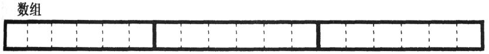
El cuadro sólido representa los 3 elementos de la primera dimensión y la línea discontinua se usa para dividir los 6 elementos de la segunda dimensión. En orden de izquierda a derecha, los valores de subíndice de cada elemento anterior son:
0,0 0,1 0,2 0,3 0,4 0,5 1,0 1,1 1,2
1,3 1,4 1,5 2,0 2,1 2,2 2,3 2,4 2,5Este ejemplo ilustra el orden de almacenamiento de los elementos de la matriz. En C, el orden de almacenamiento de los elementos de una matriz multidimensional cambia según el principio de que el subíndice situado más a la derecha cambia primero, lo que se denomina orden mayor de fila. Conocer el orden de almacenamiento de las matrices multidimensionales puede ayudar a responder algunas preguntas útiles, como en qué orden debe escribir los valores de la lista de inicialización.
¿Qué valor imprimirá el siguiente fragmento de código?
Obviamente, el primer valor que se imprimirá será el contenido de la matriz [3] [8], pero ¿qué se imprimirá a continuación? El orden de almacenamiento puede responder a esta pregunta: el siguiente elemento será aquel cuyo índice situado más a la derecha cambie primero, que es la matriz [3] [9]. ¿Quién es el siguiente? La columna 9 es la última columna de una fila. Sin embargo, de acuerdo con las regulaciones de orden de almacenamiento, después de que una fila esté llena, será el turno de la siguiente fila, por lo que el siguiente elemento a imprimir será la matriz [4] [0] [2] .
Aquí hay una pregunta relacionada. ¿La matriz es de 6 filas y 10 columnas o 10 filas y 6 columnas? La respuesta puede sorprenderle: en algunos contextos, ambas respuestas son correctas.
¿Ambos son correctos? ¿Cómo pueden haber dos respuestas diferentes? Esto es simple. Si almacena los datos en la matriz según el subíndice y luego busca el valor en la matriz según el subíndice, entonces no importa si interpreta el primer subíndice como una fila o una columna, allí no habrá diferencia. Siempre que insista en utilizar el mismo método siempre , ambos métodos de interpretación son factibles.
Sin embargo, interpretar el primer subíndice como una fila o columna no cambia el orden de almacenamiento de la matriz. Si interpreta el primer subíndice como una fila y el segundo subíndice como una columna, cuando acceda a los elementos de la matriz uno por uno en el orden de almacenamiento, los elementos que obtenga se organizarán en filas. Por otro lado, si usa el primer subíndice como columna, cuando acceda a los elementos de la matriz en el orden anterior, los elementos que obtenga se organizarán en columnas. Puede elegir un método de interpretación más razonable en su programa. Sin embargo, no puede modificar la forma en que los elementos de la matriz se almacenan realmente en la memoria. Este orden está definido por el estándar.
8.2.2 Nombre de la matriz
El valor de un nombre de matriz unidimensional es una constante de puntero y su tipo es "puntero al tipo de elemento", que apunta al primer elemento de la matriz. Los arreglos multidimensionales son casi simples. La única diferencia es que el elemento de la primera dimensión de la matriz multidimensional es en realidad otra matriz. Por ejemplo, la siguiente declaración:
int matrix[3][10];Creó una matriz, que puede verse como una matriz unidimensional que contiene 3 elementos, pero cada elemento resulta ser una matriz que contiene 10 elementos enteros.
El valor de la matriz de nombre es un puntero a su primer elemento, por lo que la matriz es un puntero a una matriz que contiene 10 elementos enteros.
K&R C:
El concepto de punteros a matrices se agregó a K&R C en una etapa bastante tardía, y algunos compiladores anticuados no lo implementaron por completo. Sin embargo, el concepto de punteros a matrices es esencial para comprender las referencias de subíndices de matrices multidimensionales.
8.2.3 Subíndice
Si desea identificar un elemento de una matriz multidimensional, debe proporcionar un subíndice para cada dimensión en el mismo orden que cuando se declaró la matriz, y cada subíndice debe colocarse individualmente en un par de corchetes. En la siguiente declaración:
int matrix[3][10];expresión
matrix[1][5]Accede a este elemento:
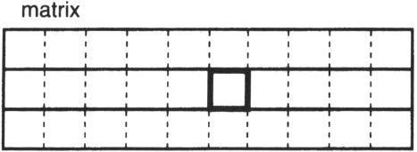
Sin embargo, las referencias de subíndices son en realidad solo una forma disfrazada de expresiones de acceso indirecto, incluso en matrices multidimensionales. Considere la siguiente expresión:
matrixSu tipo es "puntero a una matriz que contiene 10 elementos enteros" y su valor es:
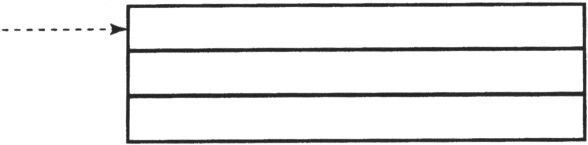
Apunta a la primera submatriz que contiene 10 elementos enteros.
expresión
matrix + 1También es un "puntero a una matriz que contiene 10 elementos enteros", pero apunta a otra fila de la matriz:
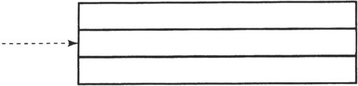
¿Por qué? Debido a que el valor de 1 se ajusta de acuerdo con la longitud de la matriz que contiene 10 elementos enteros, apunta a la siguiente fila de la matriz. Si realiza una operación de acceso indirecto en él, seleccione la submatriz central con la flecha como se muestra a continuación:
Entonces la expresión
*(matrix + 1)De hecho, se identifica una submatriz que contiene 10 elementos enteros. El valor del nombre de la matriz es un puntero constante, que apunta al primer elemento de la matriz, y esto también es cierto en esta expresión. Su tipo es "puntero a entero", y ahora podemos mostrar su valor en el contexto de la siguiente dimensión:
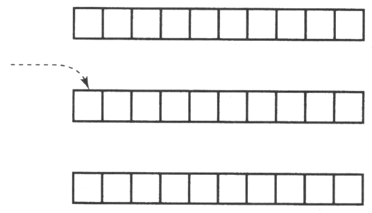
Ahora, por favor, sostenga su sombrero firmemente y adivine cuál es el resultado de la siguiente expresión.
*( matrix + 1 ) + 5La expresión anterior es un puntero a un valor entero, por lo que el valor de 5 se ajusta según la longitud del entero. El resultado de toda la expresión es un puntero y la posición a la que apunta son 5 elementos enteros detrás de la posición a la que apunta la expresión original.
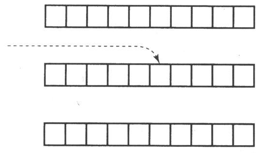
Realice operaciones de acceso indirecto en él:
*( *( matrix + 1 ) + 5 )Lo que visita es el elemento entero de la figura. Si se usa como rvalue, obtiene el valor almacenado en esa ubicación. Si se usa como un lvalue, esta ubicación almacenará un nuevo valor.
Esta expresión aparentemente aterradora es en realidad nuestro antiguo subíndice de amigo. Podemos reescribir la subexpresión * (matriz + 1) como matriz [1]. Sustituyendo esta expresión de subíndice en la expresión original, obtendremos:
*( matrix[1] + 5 )Esta expresión es completamente legal. matrix [1] selecciona una submatriz, por lo que su tipo es un puntero a un número entero. Agregamos 5 a este puntero y luego realizamos operaciones de acceso indirecto.
Sin embargo, podemos volver a utilizar subíndices en lugar de acceso indirecto, por lo que esta expresión también se puede escribir como:
matrix[1][5]De esta forma, incluso para matrices multidimensionales, los subíndices son otra forma de expresiones de acceso indirecto.
El objetivo de este ejercicio es que ilustra cómo funcionan las referencias a subíndices en matrices multidimensionales y cómo se basan en el concepto de punteros a matrices. El subíndice se calcula de izquierda a derecha y el nombre de la matriz es un puntero al primer elemento de la primera dimensión, por lo que el valor del primer subíndice se ajusta de acuerdo con la longitud del elemento. Su resultado es un puntero al elemento deseado en esa dimensión. La operación de acceso indirecto luego selecciona ese elemento en particular. Dado que el elemento en sí es una matriz, el tipo de esta expresión es un puntero al primer elemento de la siguiente dimensión. El siguiente valor de subíndice se ajusta de acuerdo con esta longitud y este proceso se repite hasta que se calculan todos los subíndices.
advertir:
En muchos otros idiomas, varios subíndices se escriben como una lista de valores separados por comas. Algunos lenguajes permiten ambas formas, pero C no: escribe
matrix[4, 3]No parece ser un problema, pero es casi seguro que su función sea diferente de lo que piensas. Recuerde, el operador de coma primero evalúa la primera expresión, pero luego descarta este valor. El resultado final es el valor de la segunda expresión. Por tanto, la expresión anterior es equivalente a la siguiente.
matrix[3]El problema es que esta expresión se puede compilar correctamente sin ningún mensaje de error o advertencia. Esta expresión es completamente legal, pero su significado es fundamentalmente diferente de lo que piensas.
8.2.4 Puntero a matriz
¿Son legales las siguientes declaraciones?
int vector[10], *vp = vector;
int matrix[3][10], *mp = matrix;La primera declaración es legal. Asigna memoria para una matriz de enteros, declara vp como un puntero a un entero y la inicializa para que apunte al primer elemento de la matriz de vectores. Vector y vp tienen el mismo tipo: un puntero a un número entero. Sin embargo, la segunda declaración es ilegal. Crea correctamente la matriz de matriz y declara mp como un puntero a un número entero. Sin embargo, la inicialización de mp es incorrecta, porque matrix no es un puntero a un número entero, sino un puntero a una matriz de números enteros. ¿Cómo deberíamos declarar un puntero a una matriz de enteros?
int (*p)[10];Esta declaración es más complicada que todas las declaraciones que hemos visto antes, pero en realidad no es tan difícil. Simplemente asume que es una expresión y la evalúa. La prioridad de la referencia de subíndice es mayor que la del acceso indirecto, pero debido a la existencia de paréntesis, el acceso indirecto se ejecuta primero. Entonces, p es un puntero, pero ¿a qué apunta?
La siguiente ejecución es la referencia del subíndice, por lo que p apunta a un cierto tipo de matriz. No hay más operadores en esta expresión de declaración, por lo que cada elemento de la matriz es un número entero.
La declaración no le dice directamente qué es p, pero no es difícil inferir su tipo: cuando realizamos operaciones de acceso indirecto en él, obtenemos una matriz y las operaciones de referencia de subíndice en la matriz obtienen un valor entero. Entonces p es un puntero a una matriz de enteros.
Después de agregar la inicialización en la declaración, se ve así:
int (*p)[10] = matrix;Hace que p apunte a la primera fila de la matriz.
p es un puntero a una matriz con 10 elementos enteros. Cuando agrega p a un número entero, el valor entero se ajusta primero de acuerdo con la longitud de los 10 valores enteros y luego se realiza la suma. Entonces podemos usar este puntero para movernos a través de la matriz línea por línea.
Si necesita un puntero para acceder a elementos enteros uno por uno en lugar de moverse a través de la matriz fila por fila, ¿qué debe hacer? Las dos declaraciones siguientes crean un puntero entero simple y lo inicializan de dos formas diferentes para apuntar al primer elemento entero de la matriz.
Int *pi = &matrix[0][0];
int *pi = matrix[0];Aumente el valor de este puntero para que apunte al siguiente elemento entero.
advertir:
Si tiene la intención de realizar cualquier aritmética de punteros en punteros, debe evitar este tipo de declaración:
int (*p)[] = matrix;p sigue siendo un puntero a una matriz de enteros, pero falta la longitud de la matriz. Cuando un entero realiza aritmética de puntero con este tipo de puntero, su valor se ajustará de acuerdo con la longitud de la matriz vacía (es decir, multiplicada por cero), que probablemente no sea lo que imaginó. Algunos compiladores pueden detectar tales errores, pero algunos compiladores no.
8.2.5 Matrices multidimensionales como parámetros de función
La forma de pasar el nombre de la matriz multidimensional como parámetro de función es la misma que la del nombre de la matriz unidimensional; lo que realmente se pasa es un puntero al primer elemento de la matriz. Sin embargo, la diferencia entre los dos es que cada elemento de una matriz multidimensional es otra matriz, y el compilador necesita conocer su dimensión para evaluar la expresión de subíndice del parámetro de función. Aquí hay dos ejemplos que ilustran la diferencia entre ellos:
int vector[10];
...
func1(vector);El tipo del vector de parámetros es un puntero a un número entero, por lo que el prototipo de func1 puede ser cualquiera de los dos tipos siguientes:
void func1( int *vec );
void func1(int vec[] );La operación del puntero en vec utiliza la longitud del número entero como factor de ajuste.
Ahora observemos una matriz:
int matrix[3][10];
...
func2( matrix );Aquí, el tipo de matriz de parámetros es un puntero a una matriz que contiene 10 elementos enteros. ¿Cómo debería ser el prototipo de func2? Puede utilizar cualquiera de los dos formularios siguientes:
void func2( int (*mat)[10] );
void func2( int mat[][10] );En esta función, el primer subíndice de mat se ajusta de acuerdo con la longitud de la matriz de enteros que contiene 10 elementos, y luego el segundo subíndice se ajusta de acuerdo con la longitud del entero, que es la misma que la matriz de matriz original.
La clave aquí es que el compilador debe conocer la longitud de la segunda dimensión y las siguientes para evaluar cada subíndice, por lo que la longitud de estas dimensiones debe declararse en el prototipo. La longitud de la primera dimensión no es necesaria porque no se utiliza al calcular el valor del subíndice.
Al escribir el prototipo de función de un parámetro de matriz unidimensional, puede escribirlo en forma de matriz o en forma de puntero. Sin embargo, para matrices multidimensionales, solo la primera dimensión se puede seleccionar de esta manera. En particular, es incorrecto escribir func2 como un prototipo como este:
void func2( int **mat );Este ejemplo declara mat como un puntero a un puntero entero, que no es lo mismo que un puntero a una matriz de números enteros.
8.2.6 Inicialización
Al inicializar una matriz multidimensional, el orden de almacenamiento de los elementos de la matriz se vuelve muy importante. Hay dos formas de escribir una lista de inicialización. La primera es dar solo una larga lista de valores iniciales, como se muestra en el siguiente ejemplo.
int matrix[2][3] = { 100, 101, 102, 110, 111, 112 };El orden de almacenamiento de la matriz multidimensional se determina de acuerdo con el principio de que el subíndice situado más a la derecha cambia primero, por lo que los resultados de esta instrucción de inicialización y las siguientes instrucciones de asignación son los mismos:
El segundo método se basa en el concepto de que una matriz multidimensional es en realidad una matriz unidimensional de elementos complejos. Por ejemplo, aquí está la declaración de una matriz bidimensional:
int tow_dim[3][5];Podemos pensar en tow_dim como una matriz unidimensional que contiene 3 elementos (complejos). Para inicializar esta matriz con 3 elementos, usamos una lista de inicialización con 3 contenidos iniciales:
int two_dim[3][5] = { ★, ★, ★ };Sin embargo, cada elemento de la matriz es en realidad una matriz de números enteros que contiene 5 elementos, por lo que la lista de inicialización de cada ★ debe ser un valor de 5 enteros rodeado por un par de llaves. Reemplazar cada ★ con este tipo de lista producirá el siguiente código:
Por supuesto, la sangría y los espacios que usamos no son necesarios, pero facilitan la lectura de esta lista.
Si elimina todas las llaves en este ejemplo, excepto la capa más externa, el resto es la misma lista de inicialización simple que el primer ejemplo. Esas llaves solo sirven para delimitar la lista de inicialización línea por línea.
La figura 8.1 y la figura 8.2 muestran la inicialización de matrices tridimensionales y tetradimensionales. En estos ejemplos, cada número como valor inicial muestra el valor de subíndice de su ubicación de almacenamiento [3] .
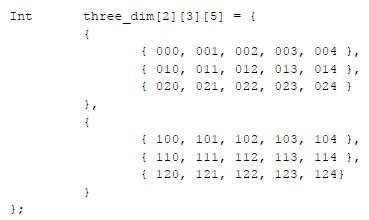
Figura 8.1 Inicializar una matriz tridimensional
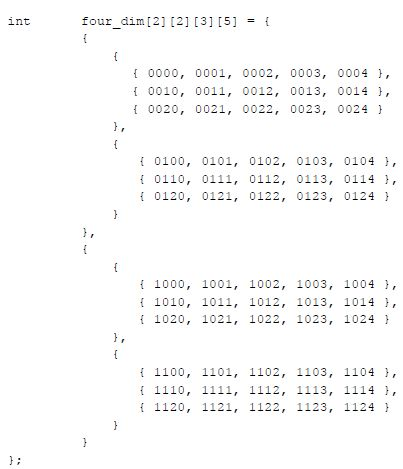
Figura 8.2 Inicializar una matriz de cuatro dimensiones
insinuación:
Dado que agregar o no esas llaves no afectará el proceso de inicialización, ¿por qué molestarse en agregarlas? Hay dos razones para esto. La primera es que ayuda a mostrar la estructura de la matriz. Una lista larga de números individuales dificulta ver qué valor está en qué posición en la matriz. Por lo tanto, las llaves actúan como un poste indicador, lo que le facilita estar seguro de que el valor correcto está en el lugar correcto.
En segundo lugar, para las listas de inicialización incompletas, las llaves son bastante útiles. Sin estas llaves, solo puede omitir los últimos valores iniciales en la lista de inicialización. Incluso si una gran matriz multidimensional tiene solo unos pocos elementos para inicializar, debe proporcionar una lista de inicialización muy larga, porque el valor inicial del elemento intermedio no se puede omitir. Sin embargo, si se utilizan estas llaves , se pueden omitir los valores iniciales al final de cada lista subinicial. Al mismo tiempo, la lista inicial de cada dimensión es una lista inicial.
Para ilustrar este concepto, revisemos la lista de inicialización de arreglos de cuatro dimensiones de la figura 8.2 y cambiemos ligeramente nuestros requisitos. Supongamos que solo necesitamos inicializar dos elementos de la matriz, el elemento [0] [0] [0] [0] se inicializa en 100, el elemento [1] [0] [0] [0] se inicializa en 200 y el resto de los elementos Ambos se inicializan a 0 por defecto. Este es el método que usamos para realizar esta tarea:
Si las llaves no se utilizan dentro de la lista de inicialización, necesitamos la siguiente lista de inicialización larga:
Esta lista no solo es difícil de leer, sino que también es difícil colocar con precisión los valores de 100 y 200 en las posiciones correctas al principio.
8.2.7 Cálculo automático de la longitud de la matriz
En una matriz multidimensional, solo la primera dimensión se puede proporcionar de forma predeterminada de acuerdo con la lista de inicialización. Las dimensiones restantes deben escribirse explícitamente para que el compilador pueda inferir la longitud de cada dimensión de subarreglo. P.ej:
Siempre que el compilador cuente el número de valores iniciales contenidos en la lista de inicialización, puede inferir que la dimensión más a la izquierda es 3.
¿Por qué no se puede inferir automáticamente el tamaño de otras dimensiones contando el número de valores iniciales de su lista inicial más larga? En principio, el compilador puede hacer esto. Sin embargo, esto requiere que al menos una lista de valores subiniciales en cada lista aparezca en forma completa (el valor inicial al final no debe omitirse), de modo que el compilador pueda inferir correctamente la longitud de cada dimensión. Sin embargo, si requerimos que los tamaños de las dimensiones que no sean la primera dimensión se proporcionen explícitamente, no es necesario que todas las listas de valores iniciales estén completas.
8.3 Matriz de punteros
Excepto por el tipo, las variables de puntero son muy similares a otras variables. Así como puede crear una matriz de números enteros, también puede declarar una matriz de punteros. Aquí hay un ejemplo:
int *api[10];Para aclarar esta compleja afirmación, asumimos que es una expresión y la evaluamos.
La prioridad de la referencia de subíndice es mayor que la del acceso indirecto, por lo que en esta expresión, la referencia de subíndice se ejecuta primero. Por lo tanto, la API es un cierto tipo de matriz (¡oh! Por cierto, contiene 10 elementos). Después de obtener un elemento de matriz, la operación de acceso indirecto se realiza inmediatamente. Esta expresión ya no tiene otros operadores, por lo que su resultado es un valor entero.
Entonces, ¿qué es exactamente una API? Después de realizar una operación de acceso indirecto en un elemento de la matriz, obtenemos un valor entero, por lo que la api debe ser una matriz y su tipo de elemento es un puntero a un número entero.
¿Dónde usarías matrices de punteros? Aquí hay un ejemplo:
char const keyword[] = {
"do",
"for",
"if",
"register",
"return",
"switch",
"while"
};
#define N_KEYWORD \
( sizeof( keyword ) / sizeof( keyword[0] ) )Tenga en cuenta el propósito de sizeof, se utiliza para contar automáticamente los elementos de la matriz. El resultado de sizeof (palabra clave) es el número de bytes ocupados por la matriz completa, y el resultado de sizeof (palabra clave [0]) es la cantidad de bytes ocupados por cada elemento de la matriz. Divida estos dos valores y el resultado es el número de elementos de la matriz.
Esta matriz se puede utilizar en un programa que cuenta el número de palabras clave en un archivo fuente C. Cada palabra ingresada se comparará con la cadena de la lista y se contarán todas las coincidencias. El programa 8.2 recorre toda la lista de palabras clave para encontrar si hay una coincidencia que sea igual a la cadena de parámetros. Cuando encuentra una coincidencia, la función devuelve el desplazamiento de la coincidencia en la lista. El programa que realiza la llamada debe saber que 0 representa hacer, 1 representa para, etc. Además, también debe saber que si el valor de retorno es -1, no hay coincidencia de palabras clave. Esta información probablemente se obtenga a través de los símbolos definidos en el archivo de encabezado.
/*
** 判断参数是否与一个关键字列表中的任何单词匹配，并返回匹配的索引值。如果未** 找到匹配，函数返回-1。
*/
#include <string.h>
int
lookup_keyword( char const * const desired_word,
char const *keyword_table[], int const size )
{
char const **kwp;
/*
** 对于表中的每个单词 ...
*/
for( kwp = keyword_table; kwp < keyword_table + size; kwp++ )
/*
** 如果这个单词与我们所查找的单词匹配，返回它在表中的位置。
*/
if( strcmp( desired_word, *kwp ) == 0 )
return kwp - keyword_table;
/*
** 没有找到。
*/
return -1;
}Procedimiento 8.2 Búsqueda de palabras clave
palabra clave.c
También podemos almacenar las palabras clave en una matriz, como se muestra a continuación:
¿Cuál es la diferencia entre esta declaración y la declaración anterior? La segunda instrucción crea una matriz cuya longitud de cada fila es suficiente para contener la palabra clave más larga (incluido el byte NUL como terminador). Esta matriz se ve así:
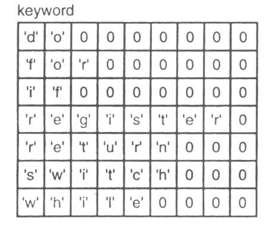
La primera declaración crea una matriz de punteros y cada elemento de puntero se inicializa para apuntar a una constante de cadena diferente, como se muestra a continuación:
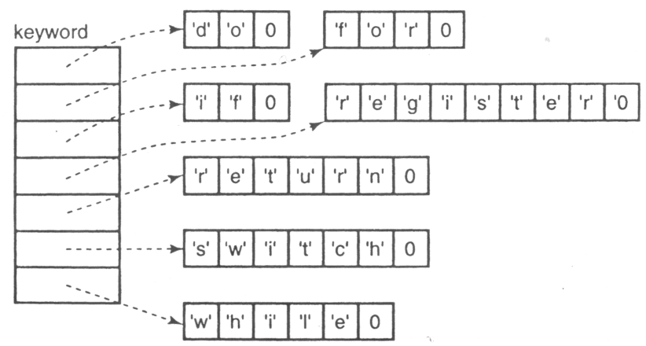
Tenga en cuenta la diferencia en el espacio de memoria ocupado por estos dos métodos. La matriz parece ser menos eficiente, porque la longitud de cada fila se fija para ajustarse a la palabra clave más larga. Sin embargo, no requiere ningún puntero. Por otro lado, la propia matriz de punteros también ocupa espacio, pero el espacio de memoria ocupado por cada constante de cadena es solo su propia longitud.
Si necesitamos modificar el Programa 8.2 para usar una matriz en lugar de una matriz de punteros, ¿qué debemos hacer? La respuesta puede sorprenderte, solo necesitamos modificar la declaración de los parámetros de la lista y las variables locales, y no es necesario cambiar el código específico. Dado que el valor del nombre de la matriz es un puntero, la función se puede ejecutar independientemente de si es un puntero o un nombre de matriz pasado a la función.
¿Qué solución es mejor? Depende de la cadena específica que desee almacenar. Si todos tienen la misma longitud, la forma de la matriz es más compacta porque no necesita usar punteros. Sin embargo, si la longitud de cada cadena varía mucho, o peor aún, la mayoría de las cadenas son muy cortas, pero algunas son muy largas, entonces la forma de matriz de punteros es más compacta. Depende de si el espacio ocupado por el puntero es menor que el espacio desperdiciado almacenando cada cadena en una línea de longitud fija.
De hecho, a excepción de tablas muy grandes, estas diferencias son tan pequeñas que no son importantes en absoluto. Las personas a menudo eligen el esquema de matriz de punteros, pero le hacen algunos cambios:
char const *keyword[] = {
"do",
"for",
"if",
"register",
"return",
"switch",
"while",
NULL
};Aquí, hemos agregado un puntero NULL al final de la tabla. Este puntero NULL permite que la función detecte el final de la tabla cuando se busca en la tabla sin conocer la longitud de la tabla de antemano, como se muestra a continuación:
for( kwp = keyword_table; *kwp != NULL; kwp++ )8.4 Resumen
En la mayoría de las expresiones, el valor del nombre de la matriz es un puntero al primer elemento de la matriz. Solo hay dos excepciones a esta regla. sizeof devuelve los bytes ocupados por toda la matriz en lugar de los bytes ocupados por un puntero. El operador unario & devuelve un puntero a una matriz, no un puntero al primer elemento de la matriz.
Excepto por la diferencia de prioridad, la matriz de expresión de subíndice [valor] es la misma que la expresión de acceso indirecto * (matriz + (valor)). Por lo tanto, los subíndices se pueden usar no solo en nombres de arreglos, sino también en expresiones de puntero. Pero de esta manera, es difícil para el compilador verificar la validez del subíndice. Las expresiones de puntero pueden ser más eficientes que las expresiones de subíndice, pero las expresiones de subíndice nunca pueden ser más eficientes que las expresiones de puntero. Sin embargo, no es una buena idea aumentar la eficiencia del tiempo de ejecución del programa a expensas de la capacidad de mantenimiento del programa.
Los punteros y las matrices no son iguales. Las propiedades de una matriz son bastante diferentes a las de un puntero. Cuando declaramos una matriz, también asigna algo de espacio de memoria para acomodar elementos de la matriz. Sin embargo, cuando declaramos un puntero, solo asigna espacio para el puntero en sí.
Cuando el nombre de la matriz se pasa como un parámetro de función, lo que realmente se pasa a la función es un puntero al primer elemento de la matriz. El parámetro recibido por la función es en realidad una copia del parámetro original, por lo que la función puede manipularlo sin afectar el parámetro real. Sin embargo, realizar un acceso indirecto a los parámetros del puntero permite que la función modifique el elemento de matriz original. Los parámetros de matriz se pueden declarar como matrices o punteros. Estas dos formas de declaración son iguales solo cuando se utilizan como parámetros formales de una función .
Las matrices también se pueden inicializar con una lista de valores iniciales, que es un conjunto de valores rodeado por un par de llaves. Las variables estáticas (incluidas las matrices) obtienen sus valores iniciales cuando el programa se carga en la memoria. Las variables automáticas (incluidas las matrices) deben reinicializarse utilizando instrucciones de asignación implícitas cada vez que el flujo de ejecución ingresa al bloque de código donde se declaran. Si la lista de valores iniciales contiene menos valores que el número de elementos de la matriz, los últimos elementos de la matriz se inicializan con valores predeterminados. Si la longitud de una matriz inicializada no se da en la declaración, el compilador establecerá la longitud de la matriz en una longitud que pueda ajustarse a todos los valores de la lista de valores iniciales. Las matrices de caracteres también se pueden inicializar de forma rápida, al igual que las constantes de cadena.
La matriz multidimensional es en realidad un tipo especial de matriz unidimensional, es decir, cada elemento también es una matriz. Los elementos de la matriz multidimensional se almacenan de acuerdo con el orden de la fila principal, es decir, el subíndice situado más a la derecha cambia primero. El valor de un nombre de matriz multidimensional es un puntero a su primer elemento, es decir, un puntero a una matriz. La operación en este puntero ajustará el operando de acuerdo con la longitud de la matriz a la que apunta. Las referencias de subíndices de matrices multidimensionales también son expresiones de puntero. Cuando se pasa un nombre de matriz multidimensional como parámetro a una función, la declaración de su parámetro de función correspondiente debe especificar explícitamente la longitud de la segunda dimensión (y todas las dimensiones posteriores). Dado que una matriz multidimensional es en realidad una matriz unidimensional de elementos complejos, la lista de inicialización de una matriz multidimensional contiene los valores de estos elementos complejos. Cada uno de estos valores puede contener listas anidadas de valores iniciales, determinados por la longitud de cada dimensión de la matriz. Si la lista de inicialización de la matriz multidimensional está completa, se pueden omitir sus llaves internas. En la lista de valores iniciales de la matriz multidimensional, solo se calculará automáticamente la longitud de la primera dimensión.
También podemos crear una serie de punteros. La lista de cadenas se puede almacenar en forma de matriz o una matriz de punteros a constantes de cadena. En la matriz, cada fila debe ser tan larga como la longitud de la cadena más larga, pero no requiere punteros. La matriz de punteros en sí ocupa espacio, pero el espacio de memoria ocupado por la cadena a la que apunta cada puntero es la longitud de la cadena en sí.
8.5 Resumen de advertencias
1. Al acceder a los elementos de una matriz multidimensional, los subíndices fueron separados por comas por error.
2. Realice operaciones aritméticas de puntero en un puntero a una matriz de longitud no especificada.
8.6 Resumen de consejos de programación
1. Obviamente, es mejor escribir un buen código desde el principio que depender de un compilador para corregir el código incorrecto.
2. La legibilidad del código fuente es casi siempre más importante que la eficiencia en tiempo de ejecución del programa.
3. Siempre que sea posible, los parámetros de puntero de la función deben declararse como const.
4. En algunos entornos, use la palabra clave register para mejorar la eficiencia del tiempo de ejecución del programa.
5. Utilice llaves completas de varias capas en la lista de valores iniciales de una matriz multidimensional para mejorar la legibilidad.
8.7 Problema
 1. De acuerdo con la declaración y los datos
que se proporcionan a continuación, evalúe cada expresión y escriba su valor. Utilice el valor proporcionado
originalmente al evaluar cada expresión (es decir, el resultado de una expresión no afecta a las siguientes
expresiones). Suponiendo que la posición inicial de la matriz ints en la memoria es 100, la longitud del valor
entero y el puntero es de 4 bytes.
1. De acuerdo con la declaración y los datos
que se proporcionan a continuación, evalúe cada expresión y escriba su valor. Utilice el valor proporcionado
originalmente al evaluar cada expresión (es decir, el resultado de una expresión no afecta a las siguientes
expresiones). Suponiendo que la posición inicial de la matriz ints en la memoria es 100, la longitud del valor
entero y el puntero es de 4 bytes.
|
expresión |
valor |
|---|---|
|
|
|
|
|
|
|
|
|
|
|
|
|
|
|
|
|
|
|
|
|
|
|
|
|
|
|
|
|
|
|
|
|
|
|
|
|
|
|
|
|
|
|
|
|
|
|
|
|
|
|
|
|
|
|
|
|
|
|
|
2. ¿Son iguales las expresiones matriz [i + j] e i + j [matriz]?
3. La siguiente declaración intenta acceder a los datos de la matriz con un subíndice a partir de 1. ¿Puede funcionar?
int actual_data[ 20 ];
int *data = actual_data – 1;4. El siguiente ciclo se usa para probar si una cadena es un palíndromo. Vuelva a escribirlo y use variables de puntero en lugar de subíndices.
5. Los punteros pueden ser más eficientes que
los subíndices, que es una de las motivaciones para usarlos. Entonces, ¿cuándo es razonable usar subíndices,
aunque
pueda ser una pérdida de eficiencia?
6. Compile las funciones try1 a try5 en su máquina y analice el código ensamblador resultante. Cual es tu conclusion?
7. Pon a prueba tus conclusiones sobre la pregunta anterior ejecutando cada función y cronometrando su tiempo de ejecución. Aumentar los elementos de la matriz a varios miles aumenta la precisión del experimento, porque el tiempo que se tarda en copiar en este momento supera con creces el tiempo que se tarda en las partes irrelevantes del programa. De manera similar, llame a una función dentro de un bucle y deje que se repita las veces suficientes para que pueda cronometrar con precisión el tiempo de ejecución. Compile el programa dos veces para este experimento: una vez sin medidas de optimización y otra vez con medidas de optimización. Si su compilador puede proporcionar opciones, elija medidas de optimización para obtener la mejor velocidad.
8. La siguiente declaración se toma de un
archivo fuente:
int a[10];
int *b = a;Pero en un archivo fuente diferente, encontré este código:
Explique, ¿qué sucede cuando se ejecutan dos sentencias de asignación? (Suponga que la longitud del entero y el puntero es de 4 bytes).
9. Escriba una declaración para inicializar una matriz de enteros denominada coin_values. El valor de cada elemento representa el valor actual de la moneda de varias monedas de dólar.
10. Dada la siguiente declaración
int array[4][2];Escriba el valor de cada expresión a continuación. Suponiendo que la posición inicial de la matriz es 1000, el valor entero ocupa 2 bytes de espacio en la memoria.
|
expresión |
valor |
|---|---|
|
|
|
|
|
|
|
|
|
|
|
|
|
|
|
|
|
|
11. Dada la siguiente declaración
int array[4][2][3][6];|
expresión |
valor |
Tipo de X |
|---|---|---|
|
|
|
|
|
|
|
|
|
|
|
|
|
|
|
|
|
|
|
|
|
|
|
|
|
|
|
|
|
|
|
|
|
|
|
|
|
|
|
|
Calcula el valor de cada expresión en la tabla anterior. Al mismo tiempo, escriba la declaración requerida para la variable x para que la expresión pueda asignarse a x sin una conversión de tipo forzada. Suponiendo que la posición inicial de la matriz es 1000, el valor entero ocupa 4 bytes de espacio en la memoria.
12. La matriz de C se almacena en orden de
fila
mayor. ¿Cuándo necesito usar esta información?
13. Dada la siguiente declaración
int array[4][5][3];Convierta cada una de las siguientes expresiones de puntero en expresiones de subíndice.
|
expresión |
Expresión de subíndice |
|---|---|
|
|
|
|
|
|
|
|
|
|
|
|
|
|
|
|
|
|
|
|
|
|
|
|
|
|
|
14. Cada subíndice de una matriz multidimensional debe aparecer por separado dentro de un par de corchetes. ¿En qué condiciones se pueden compilar los siguientes segmentos de código sin ningún mensaje de advertencia o error?
15. Dada la siguiente declaración
unsigned int which;
int array[ SIZE ];¿Cuál de las siguientes dos afirmaciones es más razonable? ¿Por qué?
if(array[ which ] == 5 && which < SIZE ) ...
if( which < SIZE && array[ which ] == 5 )...dieciséis. En el siguiente código, ¿cuál es la diferencia (si la hay) entre las variables matriz1 y matriz2?
17. Explique la diferencia significativa
entre
el uso de las dos palabras clave const siguientes.
void function( int const a, int const b[] ) {18. El siguiente prototipo de función se puede reescribir en qué forma, pero ¿mantener el resultado sin cambios?
void function( int array[3][2][5] );19. En el ejemplo de búsqueda de palabras clave en el Programa 8.2, se agrega un puntero NULL al final de la matriz de punteros de caracteres, por lo que no necesitamos saber la longitud de la tabla. Entonces, ¿cómo debería modificarse el esquema matricial para lograr el mismo efecto? Escriba una instrucción for para acceder a la matriz modificada.
8.8 Ejercicios de programación
★ 1. Escriba una declaración de matriz para inicializar ciertas posiciones específicas de la matriz a valores específicos. El nombre de esta matriz debe llamarse char_value, que contiene 3 × 6 × 4 × 5 caracteres sin firmar. Las posiciones enumeradas en la siguiente tabla deben inicializarse estáticamente con los valores correspondientes.
|
Localización |
valor |
Localización |
valor |
Localización |
valor |
|---|---|---|---|---|---|
|
1,2,2,3 |
|
1,1,1,1 |
|
1,3,2,2 |
|
|
2,4,3,2 |
|
1,4,2,3 |
|
2,2,3,1 |
|
|
2,4,3,3 |
|
2,5,3,4 |
|
1,2,3,4 |
|
|
2,1,1,2 |
|
2,2,2,2 |
|
2,2,1,1 |
|
Las posiciones que no se mencionan en la tabla anterior deben inicializarse con el valor binario 0 (no el carácter '0'). Nota : debe usarse la inicialización estática, ¡no debe haber ningún código ejecutable en su solución!
Aunque no es parte de la solución, lo más probable es que desee escribir un programa para verificar su inicialización imprimiendo el valor de la matriz. Dado que algunos valores no son caracteres imprimibles, imprima estos caracteres en forma de número entero (es más conveniente generarlos en octal o hexadecimal).
Nota : Hay dos formas de resolver este problema, una vez usando llaves anidadas en la lista de inicialización y la otra vez sin usarlas, para que pueda comprender profundamente el papel de las llaves anidadas.
★★ 2. El gobierno federal de los EE. UU.
Utiliza las siguientes reglas para calcular el impuesto sobre la renta personal de cada ciudadano en 1995:
|
Si su ingreso con impuestos incluidos es mayor que |
Pero no mas de |
Tu impuesto es |
La parte que excede esta cantidad |
|---|---|---|---|
|
$ 0 |
$ 23,350 |
15% |
$ 0 |
|
23 350 |
56,550 |
$ 3 502.50 + 28% |
23 350 |
|
56 550 |
117,950 |
12 798,50 + 31% |
56 550 |
|
117 950 |
256.500 |
31 832,50 + 36% |
117 950 |
|
256 500 |
- |
81710,50 + 39,6% |
256 500 |
Escriba definiciones de funciones para los siguientes prototipos de funciones:
float single_tax( float income );El parámetro ingresos representa los ingresos personales que deben gravarse y el valor de retorno de la función es la cantidad de impuestos que deben recaudar los ingresos.
★★ 3. La matriz identidad es una matriz cuadrada. Excepto por el valor del elemento de la diagonal principal, el valor de los demás elementos es 0. P.ej:
1 0 0
0 1 0
0 0 1Es una matriz identidad de 3 × 3. Escriba una función denominada matriz_identidad, que acepta una matriz entera de 10 × 10 como parámetro y devuelve un valor booleano para indicar si la matriz es una matriz identidad.
★★★ 4. Modifique la función identity_matrix en la pregunta anterior, puede expandir la matriz para que pueda aceptar parámetros de matriz de cualquier tamaño. El primer parámetro de la función debe ser un puntero entero y necesita el segundo parámetro para especificar el tamaño de la matriz.
★★★★★ 5. Si A es una matriz con x filas y y
columnas y B es una matriz con y filas yz columnas, multiplicando A y B, el resultado será otra matriz C con x
filas
yz columnas. Cada elemento de esta matriz está determinado por la siguiente fórmula:
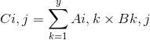
P.ej:
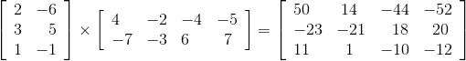
El valor de 14 en la matriz resultante se obtiene sumando 2 × -2 a -6 × -3.
Escribe una función para realizar la multiplicación de dos matrices. El prototipo de la función debería ser el siguiente:
void matrix_multiply( int *m1, int *m2, int *r,
int x, int y, int z );m1 es una matriz con x filas y y columnas, y m2 es una matriz con y filas y z columnas. Estas dos matrices deben multiplicarse y el resultado se almacena en r, que es una matriz con x filas yz columnas. Recuerde, debe realizar algunos cambios en la fórmula para adaptarse al hecho de que el subíndice C comienza desde 0 en lugar de 1.
★★★★★ 6. Como sabe, el compilador de C siempre comienza desde 0 cuando asigna un subíndice a una matriz. Y cuando el programa utiliza subíndices para acceder a los elementos de la matriz, no comprueba la validez de los subíndices. En este proyecto, escribirás una función que permita a los usuarios acceder a una "pseudoarreglo" cuyo rango de subíndices se puede especificar arbitrariamente, acompañado de una completa verificación de errores.
Aquí está el prototipo de la función que escribirás:
int array_offset ( int arrayinfo[], ... );Esta función acepta cierta información utilizada para describir la dimensión de la pseudoarreglo y un conjunto de valores de subíndice. Luego, usa esta información para traducir el valor del subíndice en un número entero, que se usa para representar el subíndice de un vector (una matriz unidimensional). Con esta función, los usuarios pueden asignar espacio de memoria en forma de vector o usar malloc para asignar espacio, pero acceder a estos espacios en forma de una matriz multidimensional. Esta matriz se denomina "pseudo-matriz" porque el compilador piensa que es un vector, aunque esta función permite acceder a ella en forma de matriz multidimensional.
Los parámetros de esta función son los siguientes:
|
parámetro |
sentido |
|---|---|
|
arrayinfo |
Una matriz de enteros de longitud variable que contiene información sobre pseudo-matrices. arrayinfo [0] especifica la dimensión de la pseudo-matriz, y su valor debe estar entre 1 y 10 (incluido 10). arrayinfo [1] y arrayinfo [2] dan el límite inferior y el límite superior de la primera dimensión. arrayinfo [3] y arrayinfo [4] dan el límite inferior y el límite superior de la segunda dimensión, y así sucesivamente |
|
... |
La parte variable de la lista de parámetros puede contener hasta 10 números enteros, que se utilizan para identificar el valor de subíndice de una posición específica en la pseudoarreglo. Debe utilizar la macro va_parameter para acceder a ellos. Cuando se llama a la función, se pasa el parámetro arrayinfo [0] |
La fórmula calcula una posición de matriz basada en el valor del subíndice que se indica a continuación. Las variables s 1 , s 2 y así sucesivamente representan los parámetros del subíndice s 1 , s 2 y así sucesivamente. Las variables lo 1 y hi 1 representan el límite inferior y el límite superior del subíndice s 1 , que se derivan del parámetro arrayinfo, y así sucesivamente para las dimensiones restantes. La variable loc representa la posición de destino de la pseudomatriz, que está representada por un desplazamiento de número entero desde la posición inicial de la pseudomatriz. Para una pseudoarreglo unidimensional:
loc = s1 - lo1
Para una pseudo-matriz bidimensional:
loc = (s1 – lo1) × (hi2– lo2+ 1) + s2 – lo2
Para una pseudoarreglo tridimensional:
loc = [(s1 –lo1) × (hi2 – lo2 + 1) + s2 – lo2] ×
(hi3– lo3+ 1) + s3– lo3
Para una pseudoarreglo de cuatro dimensiones:
loc = {[(s1 –lo1) × (hi2 – lo2 + 1) + s2– lo2] × (hi3– lo3 + 1)+ s3– lo3}×(hi4 – lo4 + 1 ) + s4– lo4
Hasta la décima dimensión, el valor de loc se puede derivar de manera similar utilizando este método.
Puede asumir que arrayinfo es un puntero válido y que el valor del parámetro de subíndice pasado a array_offset también es correcto. Para otros casos, debe realizar una comprobación de errores. Algunos posibles errores son: el número de dimensiones no está entre 1 y 10; el subíndice es menor que el valor bajo; el valor bajo es mayor que su valor de hign correspondiente, etc. Si se detectan estos u otros errores, la función debería devolver -1.
Consejo : Copie el parámetro de subíndice en una matriz local. A continuación, puede codificar el proceso de cálculo en un bucle, utilizando un bucle para cada dimensión.
Ejemplo : suponga que arrayinfo contiene los valores 3, 4, 6, 1, 5, -3 y 3. Estos valores indican que estamos tratando con una pseudoarreglo tridimensional. El primer subíndice varía de 4 a 6, el segundo subíndice varía de 1 a 5 y el tercer subíndice varía de -3 a 3. En este ejemplo, array_offset tendrá 3 parámetros de subíndice pasados cuando sea llamado. A continuación se muestran varios conjuntos de valores de subíndice y las compensaciones que representan.
|
Subíndice |
Compensar |
Subíndice |
Compensar |
Subíndice |
Compensar |
|---|---|---|---|---|---|
|
4, 1, -3 |
0 |
4, 1, 3 |
6 |
5, 1, -3 |
35 |
|
4, 1, -2 |
1 |
4, 2, -3 |
7 |
6, 3, 1 |
88 |
★★★ 7. Modifique la función array_offset de la Pregunta 6 para que acceda a la pseudomatriz almacenada en orden de columna principal, es decir, el subíndice más a la izquierda cambia primero. Esta nueva función, array_offset2, debería ser la misma que la función original en otros aspectos.
La fórmula para calcular los subíndices de estas matrices se muestra a continuación. Para una pseudoarreglo unidimensional:
loc = s1 - lo1
Para una pseudo-matriz bidimensional:
loc = (s2 – lo2) × (hi1 – lo1 + 1) + s1 – lo1
Para una pseudoarreglo tridimensional:
loc = [(s3–lo3) × (hi2 – lo2 + 1) + s2– lo2] × (hi1 – lo1 + 1) + s1– lo1
Para una pseudoarreglo de cuatro dimensiones:
loc = {[(s4 –lo4) × (hi3 – lo3 + 1) + (s3 – lo3)] × (hi2 – lo2 + 1) + s2 –
lo2}× (hi1– lo1 + 1 ) + s1 – lo1
Hasta la décima dimensión, el valor de loc se puede derivar de manera similar utilizando este método.
Por ejemplo : suponga que la matriz arrayinfo contiene los valores 3, 4, 6, 1, 5, -3 y 3. Estos valores indican que estamos tratando con una pseudoarreglo tridimensional. El primer subíndice varía de 4 a 6, el segundo subíndice varía de 1 a 5 y el tercer subíndice varía de -3 a 3. En este ejemplo, array_offset tendrá 3 parámetros de subíndice pasados cuando sea llamado. A continuación se muestran varios conjuntos de valores de subíndice y las compensaciones que representan.
|
Subíndice |
Compensar |
Subíndice |
Compensar |
Subíndice |
Compensar |
|---|---|---|---|---|---|
|
4,1, -3 |
0 |
4,2, -3 |
3 |
4,1, -1 |
30 |
|
5,1, -3 |
1 |
4,3, -3 |
6 |
5,3, -1 |
37 |
|
6,1, -3 |
2 |
4,1, -2 |
15 |
6,5,3 |
104 |
★★★★★ 8. La reina es la pieza más poderosa del ajedrez. En el tablero de ajedrez que se muestra a continuación, la reina puede atacar todas las piezas de ajedrez ubicadas en la posición cubierta por la flecha.
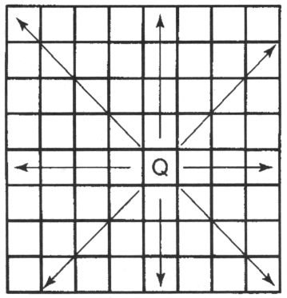
¿Podemos poner 8 reinas en el tablero de ajedrez, ninguna de ellas puede atacar a las reinas restantes? Este problema se llama el problema de las ocho reinas. Su tarea es escribir un programa para encontrar todas las respuestas a la pregunta de las ocho reinas y ver cuántas respuestas hay.
insinuación:
Si usa una técnica llamada retroceso , es fácil escribir este programa. Escribe una función para poner una reina en la primera columna de una fila y luego verifica si se ataca entre sí con otras reinas en el tablero. Si hay ataques mutuos, la función mueve la dama a la segunda columna de la fila y pasa. Si cada columna está en una situación de atacarse entre sí, la función debería regresar.
Sin embargo, si la reina puede colocarse en esta posición, la función debería llamarse a sí misma de forma recursiva, colocando una reina en la siguiente línea. Cuando regresa la llamada recursiva, la función mueve la reina original a la siguiente columna. Cuando una reina se coloca con éxito en la última línea, la función debe imprimir el tablero de ajedrez, mostrando las posiciones de las 8 reinas.
[1] Después de escribir este consejo, parece que seguí mi propia opinión y eliminé la declaración de registro en la función mil, y dejé que el compilador la optimizara por sí mismo. Al mismo tiempo, también eliminé las variables locales en la función. El mensaje en sí es muy significativo, pero el ejemplo del libro no lo muestra bien.
[2] Este ejemplo usa un puntero a un número entero para atravesar el espacio de memoria que almacena los elementos de una matriz de números enteros bidimensionales. Esta técnica se llama "aplanar la matriz", en realidad es ilegal, por lo que después de pasar de una fila a la siguiente, no puede volver a la submatriz que contiene la primera fila. Aunque generalmente no es un problema, debe evitarse si es posible.
[3] Si se compilan estos ejemplos, los valores iniciales que comienzan con 0 en realidad se interpretarán como valores octales. Lo ignoraremos aquí, solo observe los números individuales para cada valor inicial.